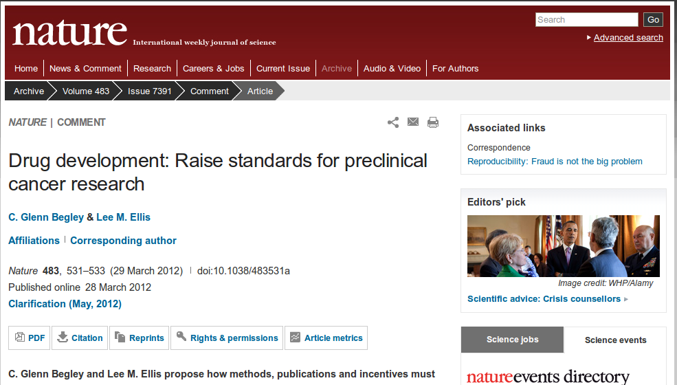
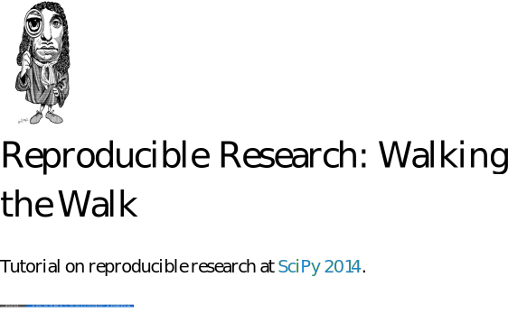

Test-Driven Development
A hands-on introduction
Berlin, Oct 1, 2014
Peter Steinbach
How people code
First

Idea(s)
Second

Coffee & Code
Third

Launch To Mars
Validate

Unexpected Result
Compile and run!
Build and Fix

Code in Science

Reproducibility?
Preclinical Cancer Research
Preclinical Cancer Research
Scientific Computing?
http://reproducible-research.github.io/scipy-tutorial-2014
Test-Driven
Development

Incremental Design
Reproducibility included
Test-Driven
Development

Demonstration
Tests, Tests, ...
- Unit Test
method to test smallest testable part of an application - Test Fixture
called before/after execution of unit test to setup or tear down test data - Test Suite
sequence of Unit Tests that validate the same entity